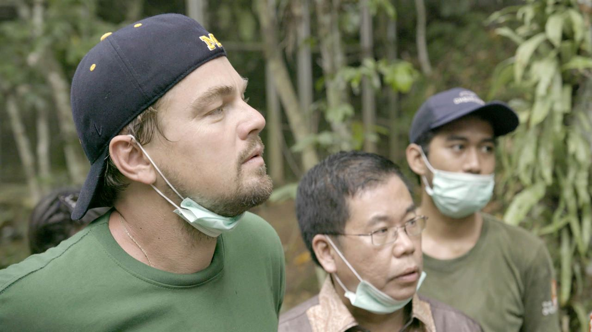
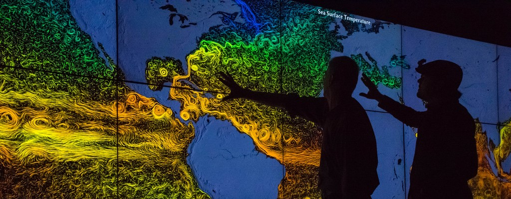

ARGUMENTO
El comienzo es fascinante y misterioso al mismo tiempo. La cámara se desplaza a través del tríptico “El Jardín de las Delicias” del Bosco, uno de los más enigmáticos del maestro holandés. Dividido en tres paneles, en el primero se representa a Adán y Eva en el jardín del Edén; en el segundo o central la superpoblación, el libertinaje y los pecados capitales que se infiltran en ese jardín, y finalizando en el tercer y último panel, muestra un paisaje oscuro y decadente, el paraíso destruído. A continuación, se muestra un carrusel de catástrofes ambientales actuales, lo que hace que nos preguntemos si el Bosco predijo las consecuencias del cambio climático hace más de 500 años.
La voz de un hombre narra el impacto que le produjo de niño ver en su casa una réplica de “El jardín de las delicias”, cuadro del pintor holandés Jheronimus Bosch (El Bosco). La pintura retrata tres momentos del mundo: el primero, un paraíso habitado por Adán y Eva con toda la riqueza natural imaginable; el segundo, cuando los humanos se entregan a los placeres mundanos y a los excesos; y el tercero retrata el infierno, consecuencia del desenfreno de los hombres en ese segundo momento.
El narrador de esta historia es Leonardo DiCaprio y ese episodio tomado de su niñez no podría ejemplificar de mejor manera el proceso de deterioro por el que el hombre ha llevado al planeta a su condición actual y ha provocado el cambio climático.
DiCaprio, actor de cine pero también reconocido activista ambiental, produjo este documental de la mano de su amigo personal y director de cine Martín Scorsese y de National Geographic. En “Before the flood” (“Antes que sea tarde”, la traducción dada al español), DiCaprio viaja alrededor del mundo, desde el Ártico hasta las selvas de Indonesia, para mostrar los efectos del cambio climático, así como también las posibles soluciones.

Tras este comienzo impactante, acompañamos al actor en un viaje de dos años alrededor del globo para comprobar en primera persona los efectos devastadores del cambio climático, desde su nombramiento como mensajero de la paz y el cambio climático de la ONU en 2014 hasta su discurso en la firma del acuerdo de París en abril de este año. En el, instó a los mandatarios mundiales a dejarse de charlas y pasar a la acción. El mundo les observa, las generaciones futuras les alabarán o les denigrarán, ustedes son la última esperanza de la Tierra.
Así, DiCaprio viaja a Canadá donde observa como los bosques boreales han sido destruidos para extraer combustibles fósiles (gas, petróleo, carbón). En Groenlandia y en el Ártico, confirma la reducción de la capa de hielo debido al calentamiento global, provocando un aumento del nivel del mar que es completamente palpable en zonas situadas a miles de kilómetros como Florida, donde las inundaciones son constantes. Peor es la situación en las islas de Palau o Kiribati, en el Pacífico: los gobiernos de estos pequeños países están tomando medidas de emergencia para evacuar a la población afectada por las inundaciones, incluso han comprado terreno a islas vecinas. Son refugiados climáticos.

El aire contaminado por las fábricas en China, cultivos y pastos anegados en La India, arrecifes de coral que desaparecen afectando a millones de personas en comunidades pesqueras que pierden su sustento. La deforestación de las selvas de Borneo y Sumatra, quemadas de forma indiscriminada para cultivar aceite de palma, el más barato del mundo y del que la industria alimentaria extrae importantes beneficios… Son algunos ejemplos que certifican el mal uso que el ser humano realiza en este planeta.
Además, se reúne con el ambientólogo Michael Mann, uno de los pioneros en la divulgación del cambio climático. El 92% de los climatólogos consideran innegable la existencia del calentamiento global pero el lobby de los combustibles fósiles es muy poderoso, tiene sus propios centros de opinión y financia campañas políticas, lo que dificulta tomar medidas legislativas al respecto, como puede ser la puesta en marcha de una tasa al carbono, un impuesto a aquellas actividades que emitan gases de efecto invernadero.
En esta línea, se manifiestan el economista y profesor de Harvard Gregory Mankiw o Elon Musk, el visionario fundador de PayPal y Tesla Motors. Este último está apostando fuertemente por el desarrollo de gigafactorías para la producción a gran escala de baterías que suministren energía limpia de forma autónoma y puedan recargarse con paneles solares. Visita a Johan Rockstrom donde constata la importancia de la movilización ciudadana para provocar cambios en el Gobierno, caso de Suecia que será la primera economía libre de combustibles fósiles. El astronauta y científico de la NASA Piers Sellers cree que aún estamos a tiempo de revertir los efectos del cambio climático, pero es necesaria más comunicación y compromiso por parte de la gente. Personalidades como John Kerry, Barack Obama o el Papa Francisco se reúnen con el actor dando su opinión sobre el cambio climático.
Volviendo al cuadro del Bosco y después de todo lo visto, es obvio que estamos en el panel central, denominado “la humanidad antes del diluvio” y que nuestras actitudes, costumbres y compromisos son lo que puede marcar la diferencia.
El documental deja claro que Estados Unidos ha sido el mayor emisor de dióxido de carbono, elemento tóxico que contamina el planeta, pero pone sus ojos también en otras regiones y países del mundo que contribuyen a profundizar el problema.
Uno de esos lugares es Indonesia, donde DiCaprio visita el Parque Nacional de Gunung Leuser, en la isla de Sumatra. Allí se experimenta la rápida degradación de su selva -de un alto valor ecológico, como consecuencia de los incendios y las talas provocadas por la industria del papel, la minería y, sobre todo, por las insaciables plantaciones de aceite de palma que se multiplican en todo el país.
Durante el documental, el actor se reunió con diferentes científicos en todo el mundo, para dejar claro que las evidencias científicas sobre el daño al planeta son reales, y también se reunió con personalidades como Ban Ki Moon (en ese momento secretario general de Naciones Unidas), John Kerry (secretario de Estado de EE.UU.) Barack Obama (presidente de EE.UU.) y el Papa Francisco, buscando de ellos reflexiones y mensajes para comprometernos en la lucha contra el cambio climático.

“Queríamos hacer un documental no solo para mostrar las consecuencias de un posible fracaso del ser humano en su lucha para salvar el planeta, sino que también queríamos mostrar las soluciones a las que podemos llegar si hay voluntad política”, explicó DiCaprio en el momento del lanzamiento del documental.
Esas soluciones están referidas a los cambios de hábito y hasta de dieta del ser humano –por ejemplo disminuir el consumo de carne de res-; eliminar el uso de los combustibles fósiles y adoptar energías renovables como la eólica o la solar; cumplir los compromisos del Acuerdo de París que contiene puntos esenciales para bajar el calentamiento global y comprender de una manera distinta nuestra relación con los seres vivos y la naturaleza del planeta.
Aunque a lo largo del documental DiCaprio se declara pesimista sobre el futuro de la Tierra, su compromiso en este proyecto, la producción del mismo y su interés de que fuera estrenado en televisión a través de National Geographic, evidencian una persona y un líder que aún cree en la utopía de salvar el planeta. “Before the flood” es una clase magistral para entender mejor los problemas asociados al cambio climático, para sensibilizarnos, pero sobre todo tiene que servir para aportar cada uno de nosotros, desde su capacidad, su grano de arena para revertir este problema antes de que sea tarde.